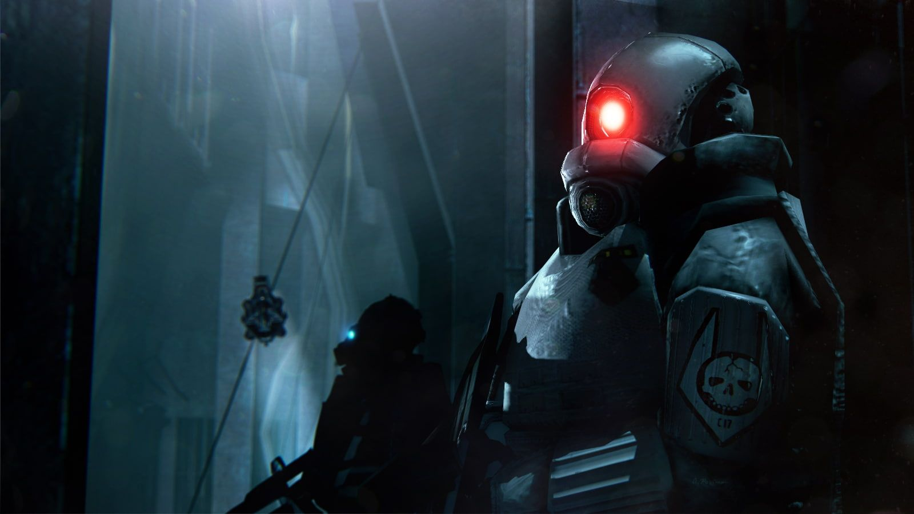
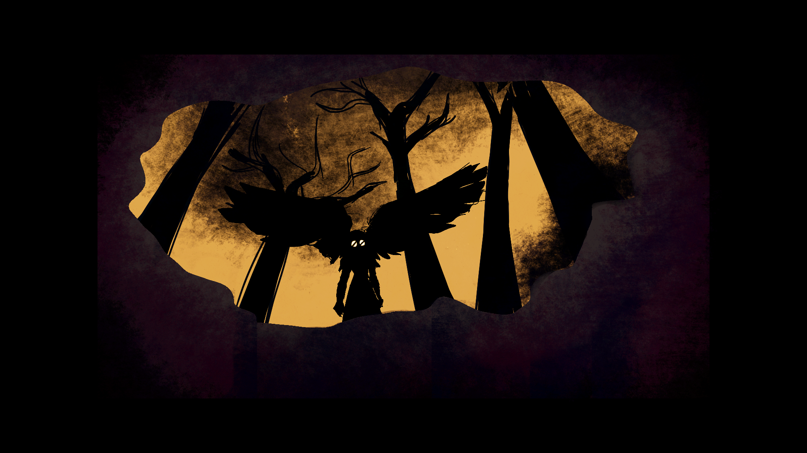

At the underground Black Mesa Research Facility, the theoretical physicist Gordon Freeman participates in an experiment on a crystal of unknown origin. This triggers a "resonance cascade", which greatly damages the facility and teleports in hostile alien creatures. Eli Vance tells Freeman to get to the surface and find help. After going through several layers of Black Mesa, Freeman discovers that United States Marines and black operators have been dispatched to the facility to terminate the aliens but also to cover up the incident by eliminating all the remaining Black Mesa personnel. A scientist instructs him to make his way to the Lambda Complex to stop the alien invasion.
Freeman then discovers a monster called the Tentacle, and kills the giant creature using a rocket engine test facility that incinerates it, and uses an underground monorail to reach a rocket silo. He launches a satellite to help the Lambda team, but is captured by vengeful Marines and left for dead in a trash compactor. Escaping through a waste treatment complex, Freeman travels through a part of Black Mesa filled with alien specimens, collected long before the resonance cascade.
Overpowered by the aliens, the Marines withdraw and began to launch air strikes. Freeman crosses the facility's surface to reach the Lambda Complex, where he discovers secret teleportation technology. There, scientists inform him that a powerful alien creature is preventing them from closing the portal. They teleport him to the alien dimension Xen to kill it. There, Freeman encounters dead scientists who teleported to Xen before him. He kills a large alien, the Gonarch, and finds a factory that manufactures alien soldiers. Finally, he enters the Nihilanth's lair and kills it. Freeman is detained by the G-Man, a mysterious agent who claims his "employers" wish to hire Freeman. If he accepts, Freeman is placed into stasis; if not, he is teleported to his death.

